\(F_{ST}\) variation across human traits
Ian Brettell
2021-06-08
- Working directory on EBI Codon HPC:
/hps/nobackup/birney/users/ian/hmn_fst - GitHub repository: https://github.com/brettellebi/human_traits_fst
1 Source libraries, functions and plotting parameters
library(here)
source(here::here("code", "scripts", "source.R"))2 Gather and process 1KG VCFs and GWAS Catalog data
Full Snakemake pipeline here: https://github.com/brettellebi/human_traits_fst/tree/master/code/snakemake/20210416
cd /hps/software/users/birney/ian/repos/human_traits_fst
conda activate snakemake
sing_load
snmk_proj="20210416"
snakemake \
--jobs 5000 \
--latency-wait 500 \
--cluster-config code/snakemake/$snmk_proj/config/cluster.json \
--cluster 'bsub -g /snakemake_bgenie -J {cluster.name} -n {cluster.n} -M {cluster.memory} -o {cluster.output} -e {cluster.error}' \
--keep-going \
--rerun-incomplete \
--use-conda \
--use-singularity \
-s code/snakemake/$snmk_proj/Snakefile \
-p3 Read in data and process
# Variables
gcat_traits = gwasrapidd::get_traits(efo_trait = target_traits)
trait_ids = gcat_traits@traits$efo_id
names(trait_ids) = trait_ids
target_dir = here::here("data/gwasrapidd/20210525")
# Read in raw associations objects
assocs_raw = lapply(trait_ids, function(TRAIT_ID){
readRDS(file.path(target_dir, "associations_raw", paste(TRAIT_ID, ".rds", sep = "")))
})
# Read in raw studies objects
studies_raw = lapply(trait_ids, function(TRAIT_ID){
readRDS(file.path(target_dir, "studies_raw", paste(TRAIT_ID, ".rds", sep = "")))
})
# Read in association-study key
studies_key = lapply(trait_ids, function(TRAIT_ID){
readRDS(file.path(target_dir, "studies_key", paste(TRAIT_ID, ".rds", sep = "")))
})
# Read in genotypes from VCFs
genos_raw = lapply(trait_ids, function(TRAIT_ID){
path = file.path(target_dir, "vcfs", paste(TRAIT_ID, ".vcf.gz", sep = ""))
n_variants = nrow(pegas::VCFloci(path))
pegas::read.vcf(path, to = n_variants)
})
# Read in loci from VCFs
loci_info = lapply(trait_ids, function(TRAIT_ID){
out = pegas::VCFloci(file.path(target_dir, "vcfs", paste(TRAIT_ID, ".vcf.gz", sep = "")))
out %>%
dplyr::mutate(CHROM = as.double(CHROM))
})
# Create vector of populations
## Read in population file
pop_file = readr::read_csv(here::here("data/1kg_populations.csv"))
## Create vector of populations
populations = unlist(lapply(rownames(genos_raw[[1]]), function(sample){
pop_file$Population[pop_file$Sample == sample]
}))
## Create data frame with just 2,504 individuals
pops_1kg = pop_file %>%
dplyr::filter(Sample %in% rownames(genos_raw[[1]]))
# Read in clumped SNPs
clumped = lapply(trait_ids, function(TRAIT_ID){
readr::read_delim(file.path(target_dir, "plink/clumped", paste(TRAIT_ID, ".clumped", sep = "")),
delim = " ", trim_ws = T)
})
# Read in 012 genotypes
genos_012 = lapply(trait_ids, function(TRAIT_ID){
readr::read_tsv(file.path(target_dir, "plink/recode_012", paste(TRAIT_ID, ".traw", sep = ""))) %>%
# rename columns to remove duplicated ID
dplyr::rename_with(~str_split(.x, pattern = "_", simplify = T) %>%
subset(select = 1),
.cols = matches("_"))
})
# Read in Plink Fst
fst_plink = lapply(trait_ids, function(TRAIT_ID){
readr::read_tsv(file.path(target_dir, "plink/fst", paste(TRAIT_ID, ".fst", sep = "")))
})3.1 Counts
How many unique SNPs in datasets?
# How many unique SNPs in associations?
raw_assocs_count = purrr::map(assocs_raw, function(TRAIT_ID){
TRAIT_ID@risk_alleles %>%
dplyr::select(variant_id)
}) %>%
dplyr::bind_rows(.id = "efo_id") %>%
dplyr::left_join(.,
gcat_traits@traits,
by = "efo_id") %>%
# combine various pigmentation traits
dplyr::mutate(TRAIT = dplyr::recode(trait, !!!pig_recode_vec),
TRAIT = factor(TRAIT, levels = extended_traits)) %>%
dplyr::group_by(TRAIT) %>%
dplyr::distinct(variant_id) %>%
dplyr::count(name = "N_ASSOCS")
#How many unique SNPs in VCFs
purrr::map(loci_info, function(TRAIT_ID){
TRAIT_ID %>%
dplyr::select(ID)
}) %>%
dplyr::bind_rows(.id = "efo_id") %>%
dplyr::left_join(.,
gcat_traits@traits,
by = "efo_id") %>%
dplyr::mutate(TRAIT = dplyr::recode(trait, !!!pig_recode_vec),
TRAIT = factor(TRAIT, levels = extended_traits)) %>%
dplyr::group_by(TRAIT) %>%
dplyr::distinct(ID) %>%
dplyr::count(name = "N_VCF") %>%
# bind with raw assocs counts
dplyr::left_join(raw_assocs_count,
.,
by = "TRAIT") %>%
# Order and add column with percentage
dplyr::mutate(PERC_RETREIVED = N_VCF / N_ASSOCS) %>%
dplyr::arrange(.by_group = T) %>%
knitr::kable(.)| TRAIT | N_ASSOCS | N_VCF | PERC_RETREIVED |
|---|---|---|---|
| body height | 4938 | 4804 | 0.9728635 |
| body mass index | 4262 | 4177 | 0.9800563 |
| self reported educational attainment | 3387 | 3360 | 0.9920283 |
| intelligence | 2595 | 2558 | 0.9857418 |
| inflammatory bowel disease | 411 | 399 | 0.9708029 |
| all pigmentation | 1203 | 1054 | 0.8761430 |
| schizophrenia | 2571 | 2350 | 0.9140412 |
| unipolar depression | 1794 | 1747 | 0.9738016 |
| fasting blood glucose measurement | 200 | 198 | 0.9900000 |
| myocardial infarction | 276 | 272 | 0.9855072 |
| low density lipoprotein cholesterol measurement | 1504 | 1319 | 0.8769947 |
| platelet count | 1851 | 1728 | 0.9335494 |
3.2 Calculate Fst with pegas
fst_pegas = lapply(genos_raw, function(TRAIT_ID){
pegas::Fst(TRAIT_ID, pop = populations)
})4 Plot \(F_{ST}\)
4.1 Bind relevant data
fst_pegas_df = lapply(trait_ids, function(TRAIT_ID){
# Loci info
loci = loci_info[[TRAIT_ID]] %>%
dplyr::select(CHROM, POS, ID, REF, ALT)
# Risk alleles
risk_alleles = assocs_raw[[TRAIT_ID]]@risk_alleles %>%
dplyr::select(association_id, variant_id, risk_allele)
# Study key
study_key = studies_key[[TRAIT_ID]]
# Studies
studies = studies_raw[[TRAIT_ID]]@studies %>%
dplyr::select(study_id, initial_sample_size, replication_sample_size)
# Fst
fst = fst_pegas[[TRAIT_ID]] %>%
data.frame(.) %>%
tibble::rownames_to_column(var = "ID") %>%
dplyr::select(ID, FST_PEGAS = Fst)
# Bind all
out = dplyr::left_join(loci, risk_alleles, by = c("ID" = "variant_id")) %>%
dplyr::left_join(study_key, by = "association_id") %>%
dplyr::left_join(studies, by = "study_id") %>%
dplyr::left_join(fst, by = "ID")
}) %>%
dplyr::bind_rows(.id = "EFO_ID") %>%
# Add `trait` for each `efo_id` from `gcat_traits` key
dplyr::left_join(gcat_traits@traits %>%
dplyr::select(efo_id, trait),
by = c("EFO_ID" = "efo_id")) %>%
dplyr::select(EFO_ID, trait, everything()) %>%
# Recode Pigmentation traits
dplyr::mutate(TRAIT = dplyr::recode(trait, !!!pig_recode_vec)) %>%
# Factorise to order
dplyr::mutate(TRAIT = factor(TRAIT, levels = extended_traits))
# Create a second df with clumped SNPs
## Get clumped SNPs
clumped_snps = lapply(clumped, function(TRAIT_ID) {
TRAIT_ID %>%
dplyr::pull(SNP)
}) %>% purrr::flatten_chr()
## Create list and bind
fst_pegas_df_clumps= list(
"ALL" = fst_pegas_df,
"CLUMPED" = fst_pegas_df %>%
dplyr::filter(ID %in% clumped_snps)
) %>%
dplyr::bind_rows(.id = "FILTER")
# How many unique SNPs in total (having grouped by TRAIT)
fst_pegas_df_clumps %>%
dplyr::filter(FILTER == "ALL") %>%
dplyr::group_by(TRAIT) %>%
dplyr::distinct(ID) %>%
nrow()## [1] 23966# How many unique SNPs in total after clumping (having grouped by TRAIT)
fst_pegas_df_clumps %>%
dplyr::filter(FILTER == "CLUMPED") %>%
dplyr::group_by(TRAIT) %>%
dplyr::distinct(ID) %>%
nrow()## [1] 102214.2 Initial counts of variants
fst_pegas_df_clumps %>%
# group by FILTER and TRAIT to take unique SNPs within each group
dplyr::group_by(FILTER, TRAIT) %>%
# take unique IDs
dplyr::distinct(ID, .keep_all = T) %>%
# ungroup
dplyr::ungroup() %>%
# plot
ggplot() +
geom_bar(aes(TRAIT, fill = TRAIT)) +
scale_fill_manual(values = pal_primary_new) +
theme_bw() +
theme(axis.text.x = element_blank(),
axis.title.x = element_blank(),
axis.ticks.x = element_blank()) +
ylab("N loci") +
facet_wrap(~FILTER, nrow = 2)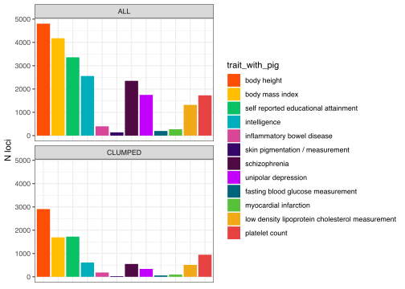
4.2.1 \(F_{ST}\)
4.2.1.1 Pegas
fst_pegas_df_clumps %>%
# filter for clumped index SNPs
dplyr::filter(FILTER == "CLUMPED") %>%
# group by TRAIT to take unique SNPs
dplyr::group_by(TRAIT) %>%
# take unique IDs
dplyr::distinct(ID, .keep_all = T) %>%
# reverse order of traits to put `body height` at the top
dplyr::mutate(TRAIT = factor(TRAIT, levels = rev(extended_traits))) %>%
# plot
ggplot(aes(FST_PEGAS, TRAIT, fill = TRAIT, colour = TRAIT)) +
geom_density_ridges(scale = 2,
bandwidth = 0.003,
calc_ecdf = TRUE,
quantiles = c(0.5, 0.9),
quantile_lines = T,
jittered_points = TRUE,
point_shape = '|', alpha = 0.85, point_size = 2,
position = position_points_jitter(width = 0.01, height = 0)) +
scale_fill_manual(values = pal_primary_new) +
scale_colour_manual(values = karyoploteR::darker(pal_primary_new)) +
guides(fill = F, colour = F) +
theme_bw() +
scale_y_discrete(expand = expansion(add = c(0.2, 2.3))) +
ylab(NULL) +
ggtitle("Median and 90%") ## Warning: Removed 1 rows containing non-finite values (stat_density_ridges).\(F_{ST}\) calculated with 26 populations
4.2.1.2 Plink
# How many unique SNPs in Fst Plink output?
fst_plink %>%
dplyr::bind_rows(.id = "TRAIT") %>%
dplyr::group_by(TRAIT) %>%
dplyr::distinct(SNP) %>%
nrow()## [1] 24083# Bind Plink outputs `fst_pegas_df_clump`
fst_all_df = fst_plink %>%
dplyr::bind_rows() %>%
# rename columns for ease of binding
dplyr::select(ID = SNP, FST_PLINK = FST) %>%
# take distinct
dplyr::distinct(ID, .keep_all = T) %>%
# bind with `fst_pegas_df_clumped`
dplyr::left_join(fst_pegas_df_clumps,
.,
by = "ID")
# Plot correlation between pegas and Plink Fst
fst_all_df %>%
dplyr::filter(FILTER == "CLUMPED") %>%
ggplot() +
geom_point(aes(FST_PEGAS, FST_PLINK, colour = TRAIT),
alpha = 0.2)+
theme_bw() +
scale_colour_manual(values = pal_primary_new) +
coord_fixed()## Warning: Removed 1 rows containing missing values (geom_point).
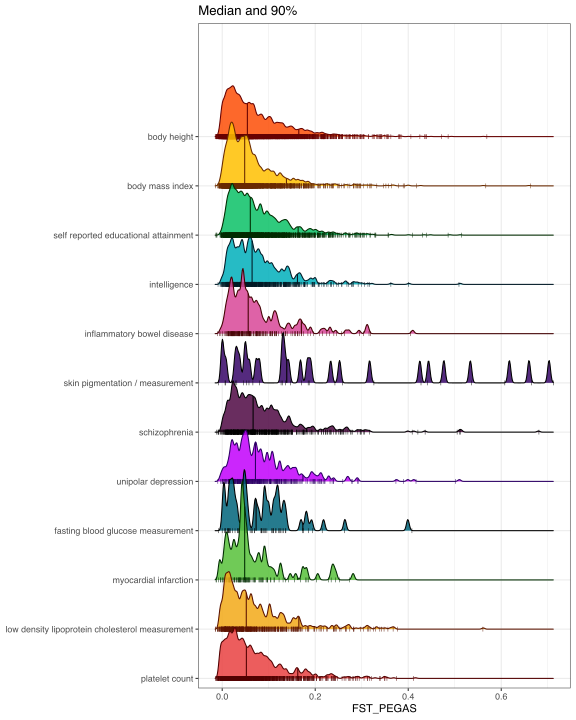
Comparison between Plink1.9 and pegas \(F_{ST}\) outputs.
4.2.2 \(F_{ST}\) for 3 populations (CEU, CHS, YRI)
target_3_pops = c("YRI", "CEU", "CHS")
# Get list of samples from the 3 target populations
pops_3_pops = pops_1kg %>%
dplyr::filter(Population %in% target_3_pops)# Get Fst
fst_3_pops = lapply(genos_raw, function(TRAIT_ID){
genos_filt = TRAIT_ID[rownames(TRAIT_ID) %in% pops_3_pops$Sample, ]
pegas::Fst(TRAIT_ID, pop = populations)
})fst_3_pops_df = fst_3_pops %>%
purrr::map(., . %>%
data.frame(.) %>%
tibble::rownames_to_column(var = "ID") %>%
dplyr::select(ID, FST_PEGAS_3_POPS = Fst)) %>%
dplyr::bind_rows() %>%
dplyr::distinct(ID, .keep_all = T) %>%
dplyr::left_join(.,
fst_all_df,
by = "ID")fst_3_pops_df %>%
dplyr::filter(FILTER == "CLUMPED") %>% # filter for clumped index SNPs
# group by TRAIT to take unique SNPs
dplyr::group_by(TRAIT) %>%
# take unique IDs
dplyr::distinct(ID, .keep_all = T) %>%
# reverse order of traits to put `body height` at the top
dplyr::mutate(TRAIT = factor(TRAIT, levels = rev(extended_traits))) %>%
# plot
ggplot(aes(FST_PEGAS_3_POPS, TRAIT, fill = TRAIT, colour = TRAIT)) +
geom_density_ridges(scale = 2,
bandwidth = 0.003,
calc_ecdf = TRUE,
quantiles = c(0.5, 0.9),
quantile_lines = T,
jittered_points = TRUE,
point_shape = '|', alpha = 0.85, point_size = 2,
position = position_points_jitter(width = 0.01, height = 0)) +
scale_fill_manual(values = pal_primary_new) +
scale_colour_manual(values = karyoploteR::darker(pal_primary_new)) +
guides(fill = F, colour = F) +
theme_bw() +
scale_y_discrete(expand = expansion(add = c(0.2, 2.3))) +
ylab(NULL) +
ggtitle("Median and 90%") ## Warning: Removed 1 rows containing non-finite values (stat_density_ridges).\(F_{ST}\) calculated with only 3 populations: CEU, CHS, and YRI
5 012 Histograms per population
Process data
increase_allele_counts = lapply(trait_ids, function(TRAIT_ID){
# Get risk allele and direction
out = dplyr::left_join(assocs_raw[[TRAIT_ID]]@associations %>%
dplyr::select(association_id, pvalue, beta_direction),
assocs_raw[[TRAIT_ID]]@risk_alleles %>%
dplyr::select(association_id, variant_id, risk_allele),
by = "association_id") %>%
# Filter for clumped SNPS
dplyr::filter(variant_id %in% clumped[[TRAIT_ID]]$SNP) %>%
# Bind with 012 genotypes
left_join(.,
genos_012[[TRAIT_ID]],
by = c("variant_id" = "SNP")) %>%
# Find whether the risk allele is COUNTED or ALT in 012 genotypes
dplyr::mutate(RISK_ALLELE = dplyr::case_when(
risk_allele == COUNTED ~ "counted",
risk_allele == ALT ~ "alt",
TRUE ~ NA_character_
)
) %>%
# Specify the "increase" allele to count
dplyr::mutate(TO_COUNT = dplyr::case_when(
beta_direction == "increase" & RISK_ALLELE == "counted" ~ "COUNTED",
beta_direction == "increase" & RISK_ALLELE == "alt" ~ "ALT",
beta_direction == "decrease" & RISK_ALLELE == "counted" ~ "ALT",
beta_direction == "decrease" & RISK_ALLELE == "alt" ~ "COUNTED",
TRUE ~ NA_character_
)
) %>%
# Swap counts if TO_COUNT == "ALT". This leaves the genotype as NA if TO_COUNT is NA
dplyr::mutate(dplyr::across(all_of(pops_1kg$Sample),
~dplyr::case_when(
TO_COUNT == "ALT" ~ dplyr::recode(.x,
`0` = 2,
`2` = 0),
TO_COUNT == "COUNTED" ~ .x,
))) %>%
# Pivot longer and get allele counts
tidyr::pivot_longer(cols = all_of(pops_1kg$Sample),
names_to = "SAMPLE",
values_to = "INCREASE_ALLELE_COUNT") %>%
# add population
dplyr::inner_join(.,
pops_1kg,
by = c("SAMPLE" = "Sample")) %>%
# factor `Population` to order
dplyr::mutate(Population = factor(Population, levels = names(onekg_pal))) %>%
# factor `INCREASE_ALLELE_COUNT` to order
dplyr::mutate(INCREASE_ALLELE_COUNT = factor(INCREASE_ALLELE_COUNT, levels = c(0:2, NA))) %>%
# Remove duplicate SNPs
## First those with NA in `TO_COUNT`
# dplyr::filter((duplicated(.$variant_id) == F | duplicated(.$variant_id, fromLast = T)) & is.na(TO_COUNT)) %>%
## Then other duplicates
# dplyr::distinct(variant_id, .keep_all = T) %>%
# Get per-population counts of 0,1,2, and NA
dplyr::group_by(Population) %>%
dplyr::count(INCREASE_ALLELE_COUNT) %>%
dplyr::ungroup()
return(out)
})Plot
5.1 Counts including NAs
To show the number of SNPs for which direction of effect was unavailable.
increase_allele_counts %>%
dplyr::bind_rows(.id = "efo_id") %>%
dplyr::left_join(.,
gcat_traits@traits %>%
dplyr::select(efo_id, trait),
by = "efo_id") %>%
dplyr::mutate(TRAIT = dplyr::recode(trait, !!!pig_recode_vec),
TRAIT = factor(TRAIT, levels = extended_traits)) %>%
dplyr::group_by(TRAIT) %>%
dplyr::group_map(
~ggplot(.x) +
geom_col(aes(INCREASE_ALLELE_COUNT, n, fill = Population)) +
facet_wrap(~Population) +
scale_fill_manual(values = onekg_pal) +
theme_bw() +
ggtitle(unique(.x$TRAIT)) +
guides(fill = F) +
xlab("Count of allele associated with increase in trait"),
.keep = T)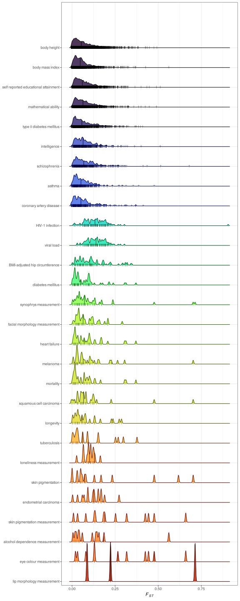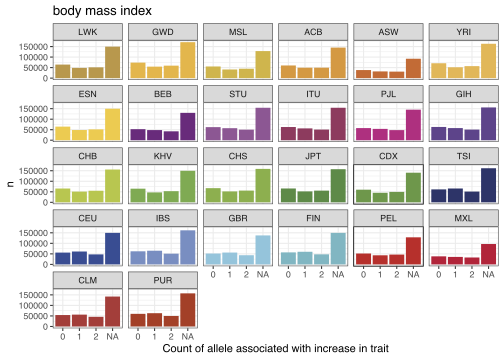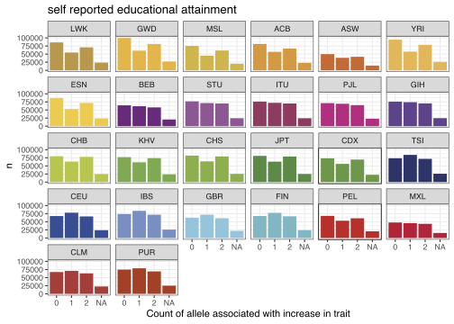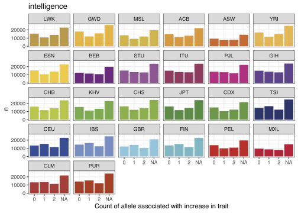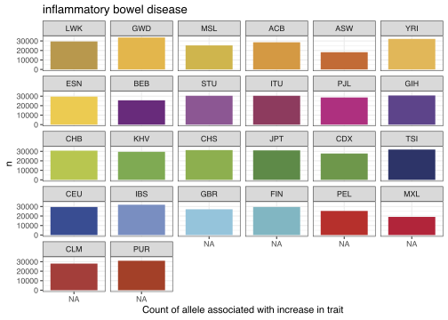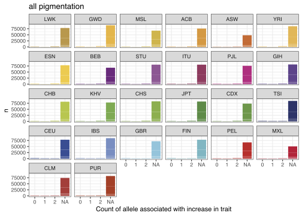 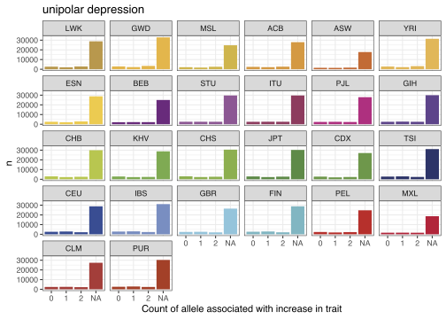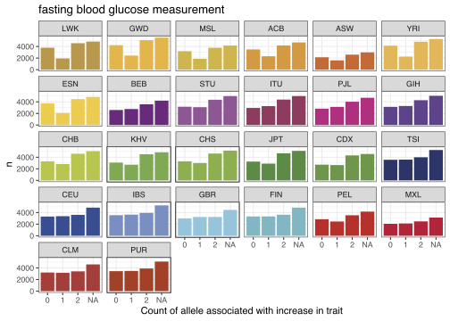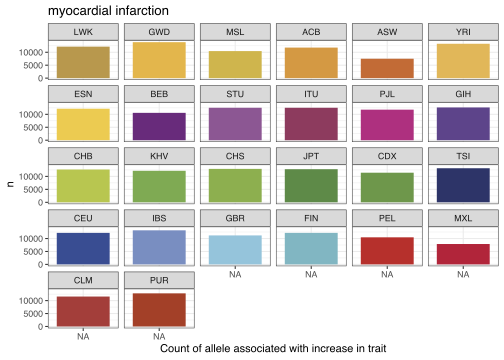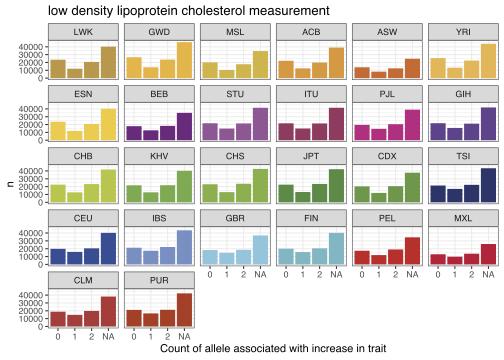
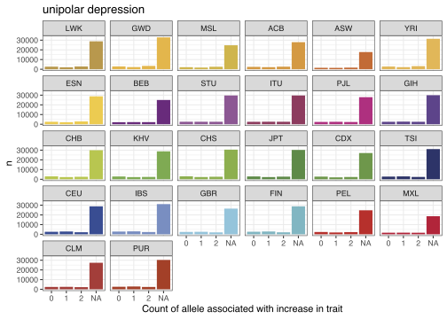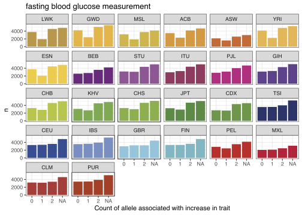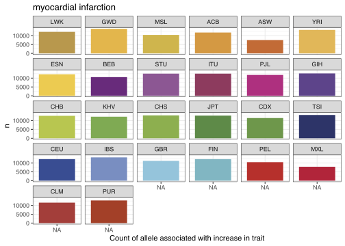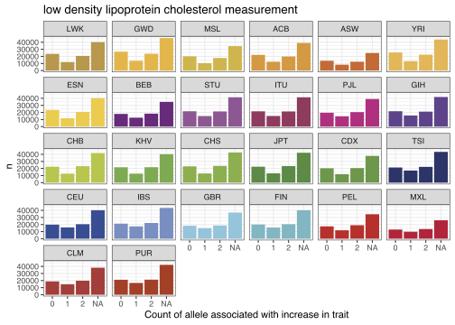
5.2 Counts excluding NAs
Now showing counts as proportions
increase_allele_counts %>%
dplyr::bind_rows(.id = "efo_id") %>%
# add trait names
dplyr::left_join(.,
gcat_traits@traits %>%
dplyr::select(efo_id, trait),
by = "efo_id") %>%
# combine pigmentation traits and order traits
dplyr::mutate(TRAIT = dplyr::recode(trait, !!!pig_recode_vec),
TRAIT = factor(TRAIT, levels = extended_traits)) %>%
# remove NAs
dplyr::filter(!is.na(INCREASE_ALLELE_COUNT)) %>%
# group by population and calculate proportions
dplyr::group_by(Population, TRAIT) %>%
dplyr::mutate(FREQ = n / sum(n)) %>%
dplyr::ungroup(Population) %>%
# Plot for each TRAIT
dplyr::group_map(
~ggplot(.x) +
geom_col(aes(INCREASE_ALLELE_COUNT, FREQ, fill = Population)) +
facet_wrap(~Population) +
scale_fill_manual(values = onekg_pal) +
theme_bw() +
ggtitle(unique(.x$TRAIT)) +
guides(fill = F) +
xlab("Count of allele associated with increase in trait"),
.keep = T)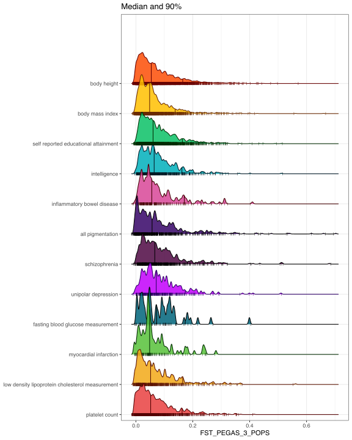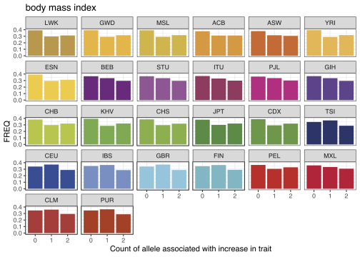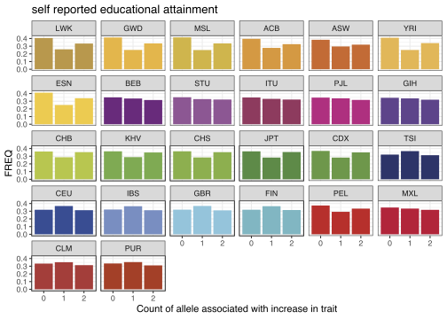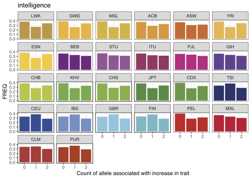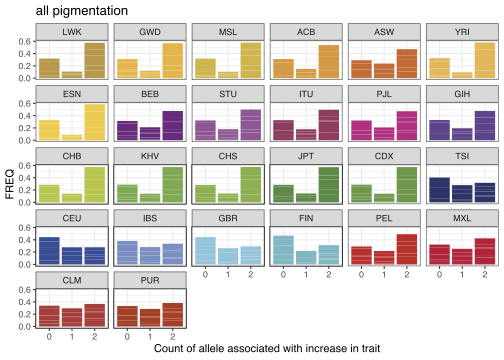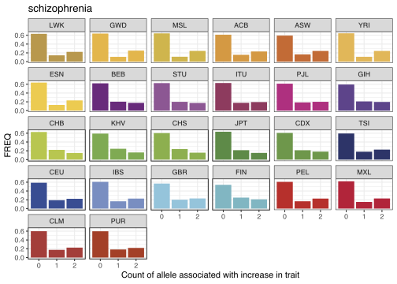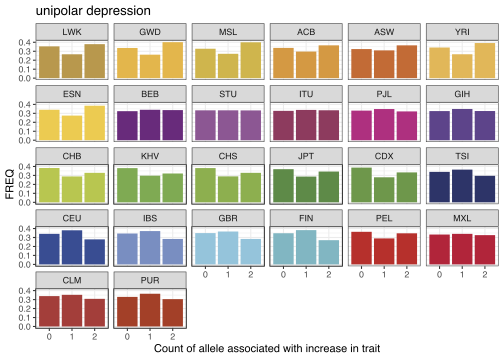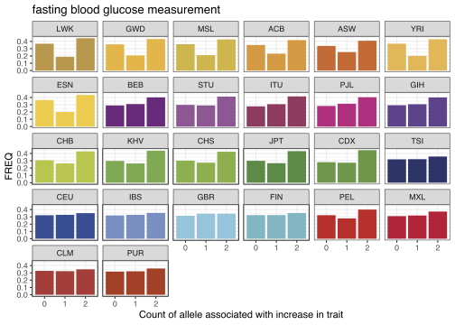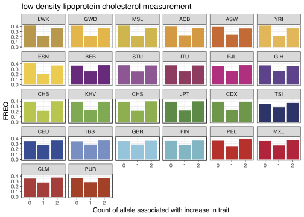
5.3 \(F_{ST}\) of component traits of all pigmentation
fst_pegas_df_clumps %>%
# filter for clumped index SNPs
dplyr::filter(FILTER == "CLUMPED") %>%
# filter for pigmentation traits
dplyr::filter(TRAIT == "all pigmentation") %>%
# group by `trait` to take unique SNPs
dplyr::group_by(trait) %>%
# take unique IDs
dplyr::distinct(ID, .keep_all = T) %>%
# factorise `trait` to order
dplyr::mutate(trait = factor(trait, levels = pig_traits)) %>%
# plot
ggplot(aes(FST_PEGAS,
colour = TRAIT,
fill = TRAIT)) +
geom_histogram(bins = 50) +
facet_wrap(~trait, ncol = 1) +
scale_fill_manual(values = pal_primary_new) +
scale_colour_manual(values = karyoploteR::darker(pal_primary_new)) +
guides(fill = F, colour = F) +
theme_bw() +
ylab("count") #+
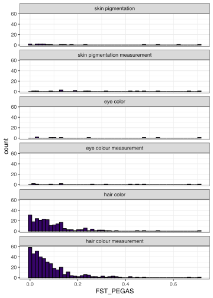
\(F_{ST}\) across pigmentation traits
# ggtitle("Median and 90%") 5.4 \(F_{ST}\) of SNPs discovered in different studies
# How many studies contributed to pigmentation traits?
fst_pegas_df_clumps %>%
# filter for clumped index SNPs
dplyr::filter(FILTER == "CLUMPED") %>%
# filter for pigmentation traits
dplyr::filter(TRAIT == "all pigmentation") %>%
# factorise `trait` to order
dplyr::mutate(trait = factor(trait, levels = pig_traits)) %>%
# count studies for each trait
dplyr::group_by(trait) %>%
dplyr::distinct(study_id) %>%
dplyr::summarise(N_STUDIES = dplyr::n())
# Plot
fst_pegas_df_clumps %>%
# filter for clumped index SNPs
dplyr::filter(FILTER == "CLUMPED") %>%
# filter for pigmentation traits
dplyr::filter(TRAIT == "all pigmentation") %>%
# factorise `trait` to order
dplyr::mutate(trait = factor(trait, levels = pig_traits)) %>%
# group by `trait` to take unique SNPs
dplyr::group_by(trait) %>%
# take unique IDs
# dplyr::distinct(ID, .keep_all = T) %>%
# Plot for each `trait`
dplyr::group_map(
~ ggplot(.x, aes(FST_PEGAS,
colour = TRAIT,
fill = TRAIT)) +
geom_histogram(bins = 50) +
facet_wrap(~initial_sample_size, ncol = 1) +
scale_fill_manual(values = pal_primary_new) +
scale_colour_manual(values = karyoploteR::darker(pal_primary_new)) +
guides(fill = F, colour = F) +
theme_bw() +
ylab("count") +
ggtitle(unique(.x$trait)),
.keep = T)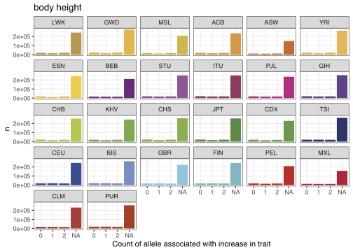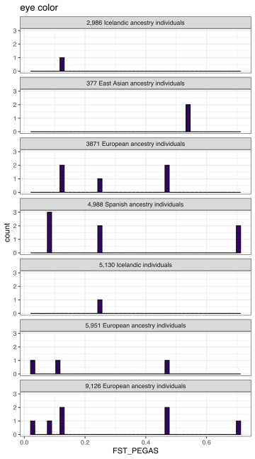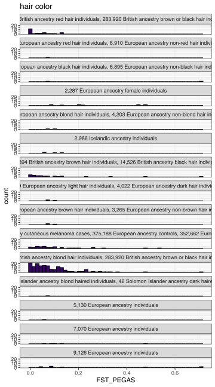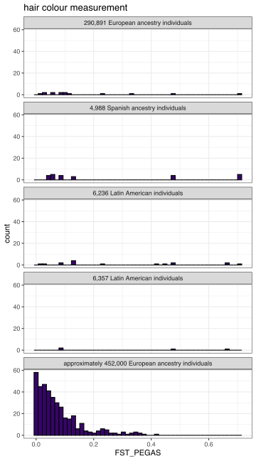